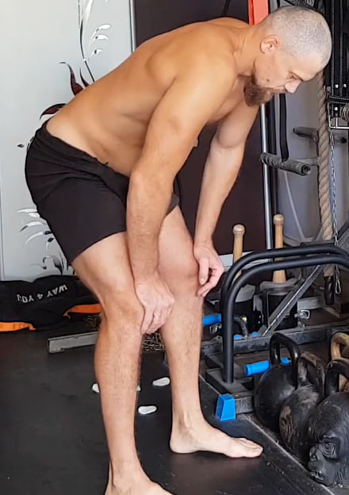
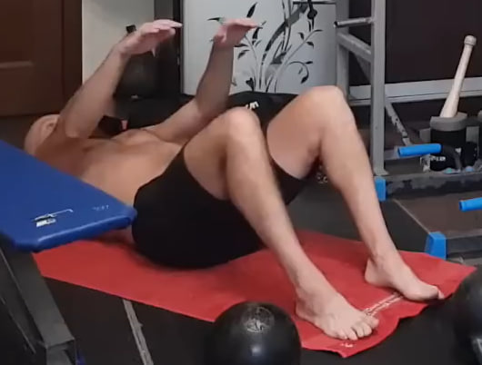
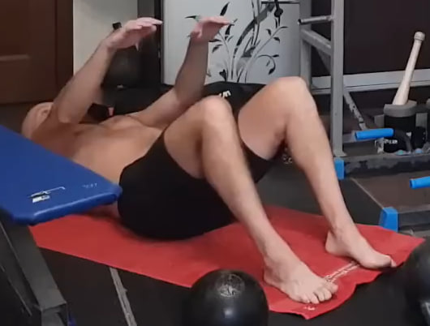
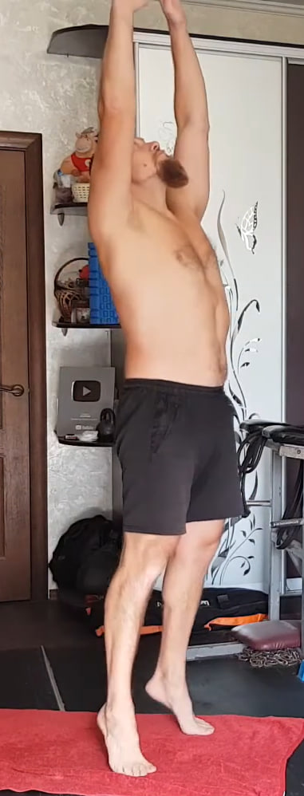
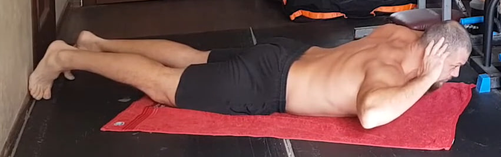

1. Respiración de fuerza hacia arriba con papel

Colócate de pie con las piernas al ancho de los hombros y las manos en la cintura. Mantén el abdomen firme, el pecho abierto y la mirada dirigida hacia arriba. Toma un trozo de papel o tela ligera.
Inhala profundamente por la nariz llenando la parte baja del abdomen y el diafragma. Al exhalar por la boca, expulsa el aire con máxima fuerza hacia arriba intentando lanzar el papel verticalmente y mantenerlo en el aire el mayor tiempo posible. El cuerpo no debe colapsar: el pecho sigue abierto y el core permanece activo. Realiza 10 expulsiones fuertes, controlando cada inhalación para evitar mareos.
2. Uddiyana Bandha con bombeo abdominal en apnea


Colócate de pie con los pies al ancho de los hombros e inclina ligeramente el torso hacia adelante, apoyando las manos por encima de las rodillas. Exhala todo el aire hasta vaciar completamente los pulmones y realiza una apnea con los pulmones vacíos.
En esta apnea eleva el diafragma hacia arriba y mete el abdomen hacia dentro creando un vacío profundo. Luego relaja el abdomen dejando que salga hacia fuera, siempre sin tomar aire. Alterna este movimiento de meter y soltar el abdomen varias veces dentro de la misma retención. Cuando ya no puedas mantener la apnea, inhala suave y descansa unos segundos. Cada retención cuenta como una repetición. Realiza 10 repeticiones.
3. Uddiyana Bandha lenta con retención prolongada

De nuevo, coloca los pies al ancho de los hombros e inclina el torso hacia adelante apoyando las manos por encima de las rodillas. Exhala todo el aire hasta vaciar por completo los pulmones y realiza una apnea.
Durante la apnea eleva el diafragma muy lentamente y mete el abdomen hacia dentro de forma gradual, creando un vacío profundo y uniforme. Mantén el vacío sin mover el abdomen, con un control total. La salida también es lenta: primero relaja suavemente el abdomen y solo después toma aire de manera tranquila. Realiza 10 repeticiones, manteniendo cada retención todo lo que sea cómodo sin forzar.
4. Respiración diafragmática con piernas elevadas y contracción del suelo pélvico


Túmbate boca arriba con la pelvis cerca de la pared y las piernas estiradas hacia arriba, apoyadas en un ángulo de 60–90 grados. La zona lumbar descansa en el suelo, los hombros están relajados y los brazos a los lados del cuerpo.
Respira de forma deliberadamente lenta y tranquila. Al inhalar por la nariz deja que el abdomen suba suavemente. Al exhalar por la boca haz una exhalación más larga que la inhalación y crea una ligera sensación de vacío interno: el abdomen se retrae hacia dentro y el diafragma asciende, como una versión suave de Uddiyana Bandha pero sin apnea.
En la parte final de cada exhalación añade la contracción del suelo pélvico: contrae el esfínter y los músculos profundos como si quisieras detener la orina o retener gases. Mantén esta contracción durante toda la exhalación y 1–2 segundos más antes de soltarla. La posición con las piernas elevadas mejora el retorno venoso desde las piernas y concentra la circulación en la zona pélvica.
Esta combinación de respiración diafragmática lenta y contracciones controladas del suelo pélvico produce un masaje interno suave útil tanto para hombres como para mujeres. Para los hombres puede ayudar a mantener y, en muchos casos, recuperar la función natural de la próstata y la musculatura pélvica; para las mujeres contribuye a tonificar el suelo pélvico, mejorar la sensibilidad y prevenir problemas de incontinencia. Respira así durante 1–2 minutos.
5. Elevación parcial del abdomen
 

Acuéstate boca arriba con las rodillas flexionadas y los pies apoyados en el suelo. Desliza las manos hacia las rodillas y eleva ligeramente los hombros del suelo sin despegar la zona lumbar. El movimiento es corto y muy controlado: se trata de “exprimir” el abdomen desde abajo, no de incorporarse por completo.
En cada repetición exhala con fuerza al subir, apretando el abdomen, e inhala al bajar sin permitir que los músculos se relajen del todo. Mantén el core activo en todo momento. Realiza 3 series de 10 repeticiones, o bien 1 serie continua de 30 repeticiones si ya tienes suficiente resistencia.
Variación avanzada: para aumentar la intensidad, coloca los pies en una superficie elevada (banco, escalón, balón). Esto incrementa la palanca y obliga al abdomen a trabajar con mayor profundidad.
6. Flexiones hacia adelante y regreso

Colócate de pie con los pies al ancho de los hombros y las piernas completamente rectas. Desde esta posición inclina el torso hacia adelante dejando que los brazos bajen hasta el suelo o hasta donde llegues sin doblar las rodillas.
Siente el estiramiento en la parte posterior de las piernas y la zona lumbar. Después vuelve a incorporarte de forma controlada, vértebra por vértebra, sin prisas. Realiza 10 repeticiones, manteniendo siempre las piernas rectas y la respiración tranquila.
7. Estiramiento vertical en puntas con brazos elevados
Colócate de pie con los brazos estirados directamente por encima de la cabeza. Mantén los codos rectos y las manos juntas o paralelas, como si quisieras tocar el techo.
Desde esta posición eleva los hombros hacia arriba creando un estiramiento activo de toda la línea lateral del cuerpo y sube a las puntas de los pies, ganando altura sin inclinarte hacia adelante ni hacia atrás. Baja lentamente los talones al suelo manteniendo los brazos arriba en todo momento y repite. Realiza 10 repeticiones, buscando cada vez un estiramiento un poco mayor.
8. Hiperextensión con elevación de piernas
Acuéstate boca abajo con las piernas estiradas y los dedos de los pies apuntando hacia atrás. Coloca las manos detrás de la cabeza sin tirar del cuello.
Desde esta posición eleva simultáneamente el pecho y las piernas, creando una contracción completa de toda la cadena posterior: zona lumbar, glúteos y músculos de la espalda. El abdomen permanece ligeramente activado para estabilizar la postura.
Una vez arriba, mantén la posición durante 10 segundos, respirando con control sin dejar que el cuerpo caiga ni que la zona lumbar se arquee en exceso. Después desciende lentamente hasta tocar el suelo. Realiza 10 repeticiones, manteniendo siempre la forma correcta y la elevación tanto del torso como de las piernas.